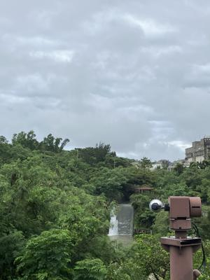
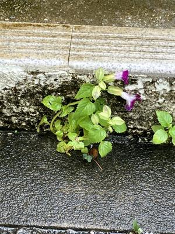

うるがいの話 ある日
最新: ＡＢＣ記譜法【うるがいの話 ある日】とは 一日だけのプログです
『うるがいの話』の最新一日だけのプログで、通信料が少なく経済的だ。カニの画像をクリックすると全ての日付が載る『うるがいの話』サイトを表示します
|
|
【うるがいの話】 うるがい(ｳﾙｶﾞｲ urugai)とは、『もずくがに』の名前でとても大きくなります。 |
|---|---|
|
|
【カミマヤーの話】 猫のことを方言でマヤーといいます。カミマヤー（kamimayaa）とは、神の猫のことです。 |
|
【たながぁの音楽】 たながぁ（ﾀﾅｶﾞｰ tanagaa）とは手長えびのことで、何種類かあり大きいのは車 エビぐらいになります。 |

|
【ぶながぁの話】 ぶながぁ(ﾌﾞﾅｶﾞｰ bunagaa)とは、赤い髪の毛、赤い身体、そして身長は１ｍ２０ｃｍ ぐらい、川の蟹を食べているの目撃された。場所は沖縄県国頭郡大宜味村のと ある村僕の隣近所に住んでいる爺さんから、聞いた話です。 |
|
|
【ギーマの話】 ギーマ(giima)とは、山原の里山に咲くスズランに似た、 花を付けます。実は食べられます、 気が付くと口の周りが紫になっています。 |
2024年06月12日 (水）ＡＢＣ記譜法
15:23

『クボ 二本の弦の秘密』という映画を５月６日にみる。エンディングで流
れていた曲、ん？、どこかで聞いたことがある曲、そして津軽三味線（吉田
兄弟が演奏）が素晴らしい。で、ユーチューブ動画の製作を行うことにした
ネットから、あまたなる楽譜データを収集する。その中で、演奏される曲は
同じだが、音符の構成で似て非なるものになっている。これまでもたびたび
そういう楽譜を見たことがある。そこで、その変な楽譜を他の楽譜をベース
を同じにしようと考えた。ＤＴＭ歴３年だけど、ＡＢＣ記譜法というものが
ある事を知った。素晴らしい！、詳細はパスするがＥａｓｙＡＢＣというソ
フトを利用することで容易に対応できた。

完成させた三線版は、勘所を打ち込むことは耐えられないとやめる。実際に
演奏する人が、いるのだろうか？、と思うが世の中にはスゴイ人がいるので
分からない。楽譜のパートは８つ、ドラムはもちろんだが、エレキギター、
オルガンなど集めた楽譜データをチャンプルーにした。
玄関の段石の隙間で花を咲かせる ど根性トレニア 
話が変わるが、たまたま英語の本でビートルズの物語を読んだ。『ビートル
ズがフィリピンで殺されそうになったイメルダ事件』を初めて知る。ホーそ
んなこともあったのかと、とんでもないイメルダさんは亡くなってしまった
が、その息子が大統領になっている。父親は、フリピンマニラ市で生まれて
いるので、すこし気になるのである。せっかくなので、ユーチューブ動画を
最後アウトロ（３分４０秒から）は、映画を意識してスゴイ演奏になってい
るが。それにしても長い曲名だ、好きな人は聞くけど日曜日の夜、アップし
たけど未だに５回しかクリックされていない・・・・。
『Beatles While My Guitar Gently Weeps 三線 MuseScore3』４分４７秒
動画演奏
１５時１２分 ビットコインの総資産 ￥３０、７６２（↓２５１）